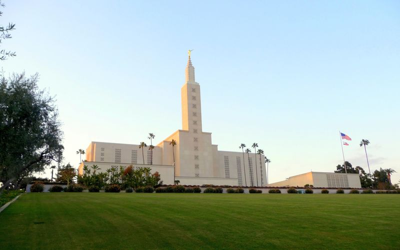
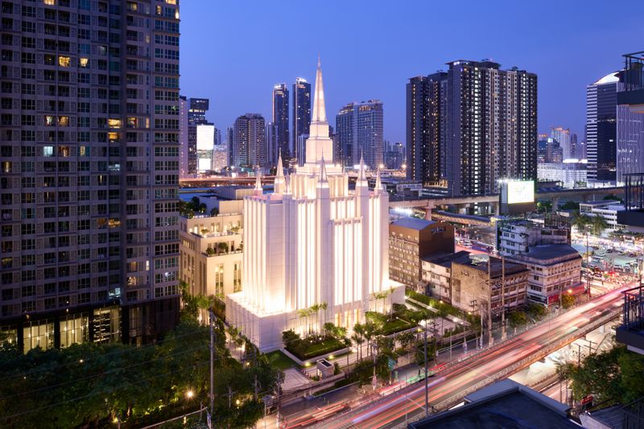
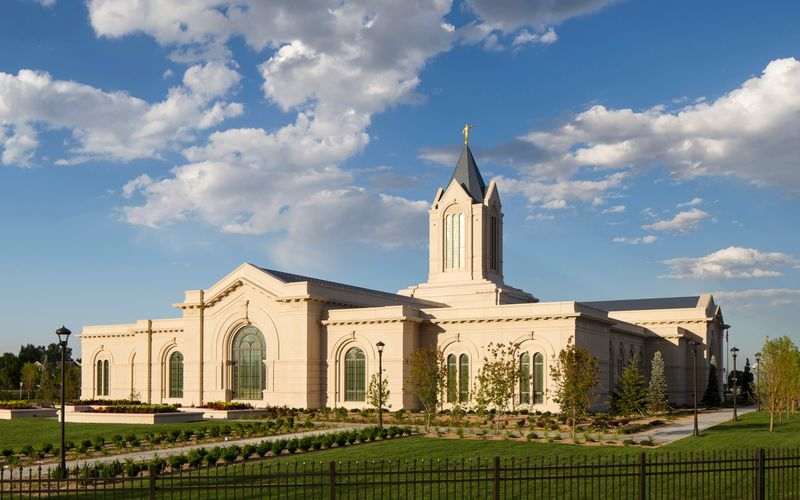
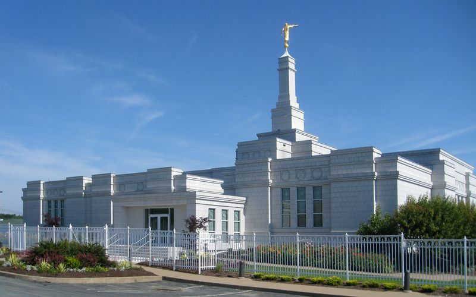

Temple Album
Home
Old
New
Large
Small
By Nanlung Micheal Longtau
Aba, Nigeria temple

Los Angeles, California temple
Auckland, New Zealand temple

Bangkok, Thailand temple
Belem, Brazil temple
Brigham City, Utah temple
Dallas, Texas temple

Fort Collins, Colorado temple

Halifax, Nova Scotia temple
Logan, Utah temple